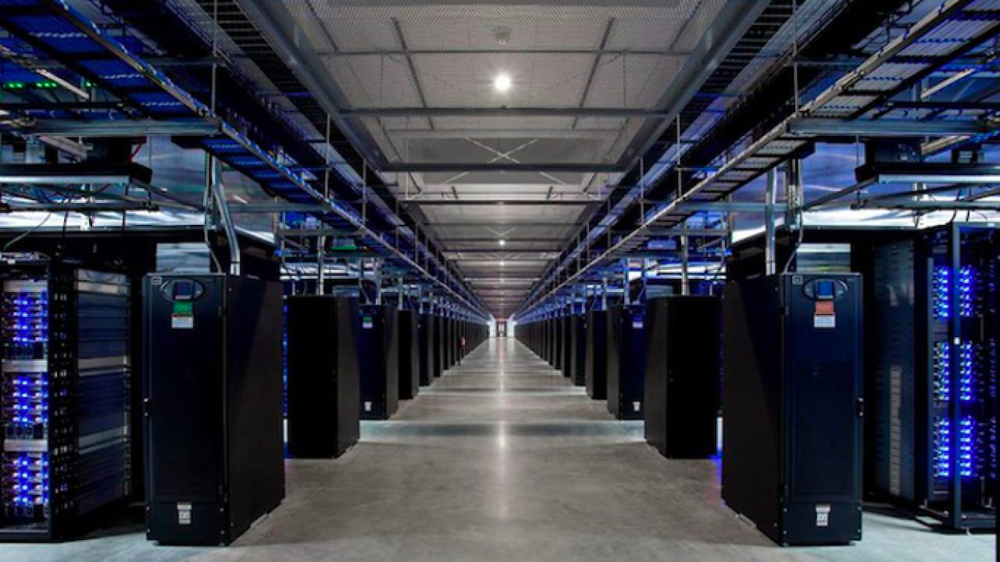

Les data-centers
et la surconsommation d’électricité générée ...

The Social Network illustre la difficulté de gérer une entreprise. Il illustre aussi la fascination des gens auprès de Facebook. Comme cette scène où Sean Parker utiliser Facebook, un matin. C’est un véritable phénomène de société. Ce film est une biographie de la création de The Facebook. Il présente ainsi des points communs avec la réalité. Mark a souhaité créer un idéal de connectivité à travers le globe. Cependant, cette idée pose problème d’un point de vue environnemental.
"Sean Parker", image issue du film
Pour la plupart des gens, cette pollution est invisible. Il est vrai que l’air du sans-fil est trompeur. Cependant, elle existe bien. La dépendance aux réseaux sociaux pollue mais est hors contexte. Ici, nous parlons d’une pollution matérielle. Lors d’une recherche, l’utilisateur effectue un échange. Il demande sa recherche, et on lui envoie des propositions. Ces données font donc le tour du monde en effectuant des distances pharamineuses Ce qui fait office de passerelle se nomme « data-center ». Il y en a aux alentours des 4000 dans le monde. Ces centres de données permettent une accumulation de data. Ils fonctionnent sur le même principe que le « Cloud ». Cela offre à l’utilisateur plus de stockage sur son appareil.
Le problème est que ces data-centers consomment énormément d’électricité. Les data-centers utilisent 1% de l’électricité mondiale. Ces centres de données marchent sans jamais s’arrêter. Comme toute machine, elle chauffe plus on l’utilise. Il faut donc beaucoup de climatisations pour les refroidir. Cependant, elle est loin d’être écologique. Actuellement, la climatisation représente 50 % de la consommation d’électricité des data-centers.
Aperçu d'un Data-Center
Revue scientifique:
"Autre particularité du Web, son « hyperdisponibilité » : toutes les infrastructures sont dimensionnées pour absorber les afflux de données liés aux pics d’utilisation, soit quelques heures par jour à peine, et demeurent sous-utilisées le reste du temps. « Si un routeur fonctionne à 60 % de sa capacité, c’est un maximum, estime Anne-Cécile Orgerie. Même chose pour les data-centers, qui sont peu sollicités la nuit. Or, même inactifs, ces équipements sont très énergivores. » Ainsi, un serveur allumé mais inactif va consommer 100 W, contre 200 W au maximum s’il est en plein calcul. La différence entre ces deux états pour le routeur sera de quelques pourcents à peine... Pourtant, personne ne songe à éteindre – au moins en partie – ces équipements aux heures creuses."
Une recherche consomme autant qu’une ampoule pendant une heure. À chaque utilisation d’un réseau social, on fait plus qu’une recherche. Pour évaluer la pollution, on peut convertir l’électricité en empreinte carbonique. Théoriquement, 1kWh produit 100g de CO2. Aussi 1.000kWh est égale à 1MWh. Enfin 1.000.000 MWh représente 1TWh. Alors, 1TWh est égalé à 100.000 de tonnes de CO2. En 2019, les data-centers ont consommé 205TWh. Cela représente 20.500.000 de tonnes de CO2. Depuis des années, de plus en plus de personnes utilisent Internet. On peut le voir avec Facebook qui possèdent 2,3 milliards de membres. Il est impossible de ne plus utiliser les data-centers. Le monde se connecte jour après jour et non l’inverse. Comment pourrions-nous parer à cette empreinte carbonique trop élevé ? L’utilisation des data-centers peut-être avoir un autre but ?
Illustration du langage informatique (binaire)